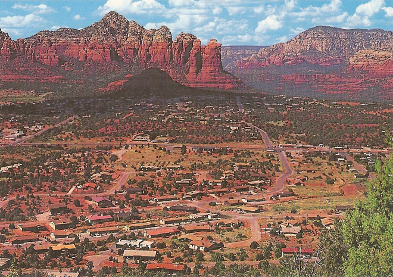
.
Sedona's main attraction is its array of red sandstone formations. The formations appear to glow in brilliant orange and red when illuminated by the rising or setting sun. The red rocks form a popular backdrop for many activities, ranging from spiritual pursuits to hiking and mountain biking trails.
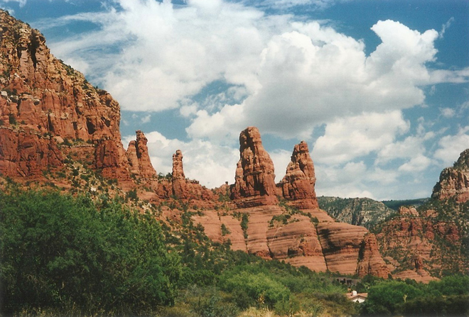
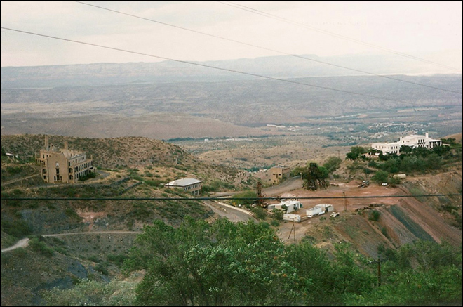
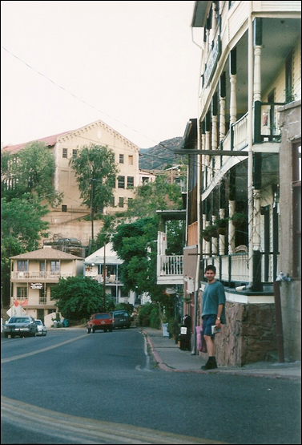
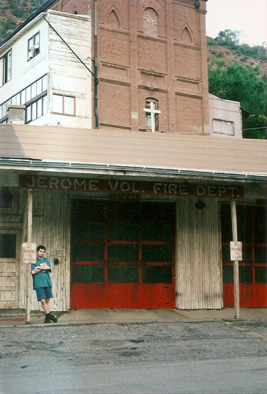
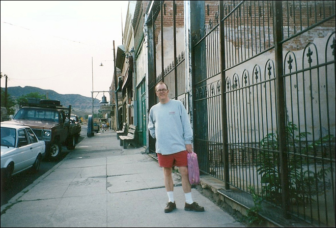
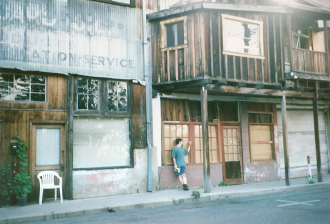
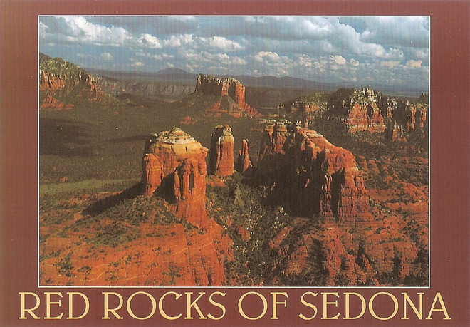
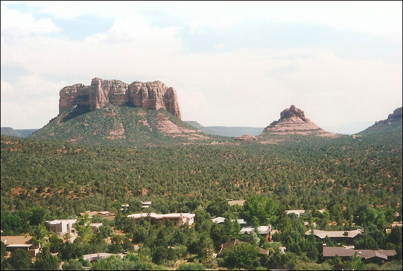
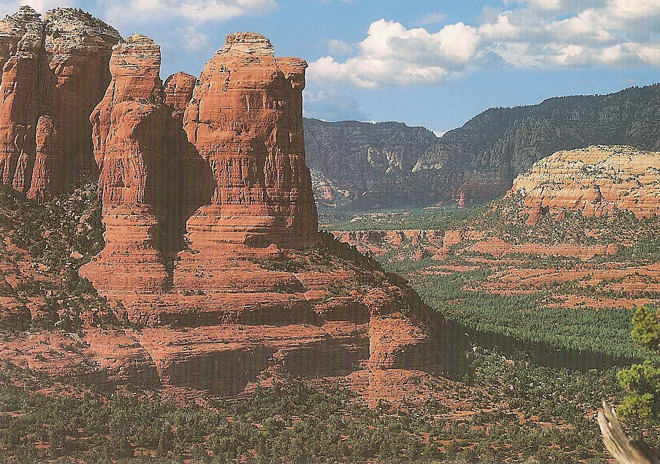
The Chapel of the Holy Cross is a Roman Catholic chapel built into the buttes of Sedona, AZ, and is run by the Roman Catholic Diocese of Phoenix. The chapel was inspired and commissioned by local sculptor Marguerite Brunswig Staude, who had been inspired in 1932 by the newly constructed Empire State Building to build such a church. After an attempt to do so in Budapest, Hungary (with the help of Lloyd Wright, son of architect Frank Lloyd Wright) was aborted due to the outbreak of World War II, she decided to build the church near her American home.
Richard Hein was chosen as project architect and the chapel was completed in 1956.
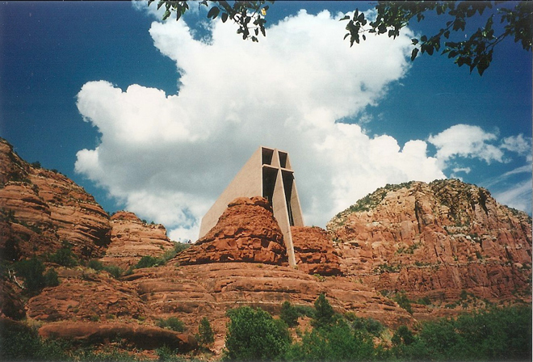
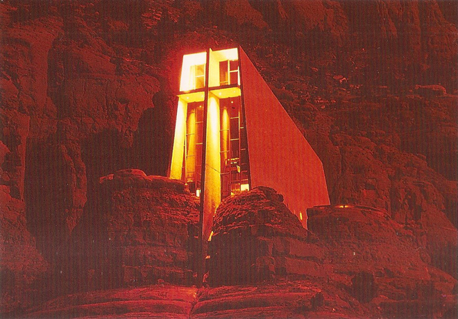
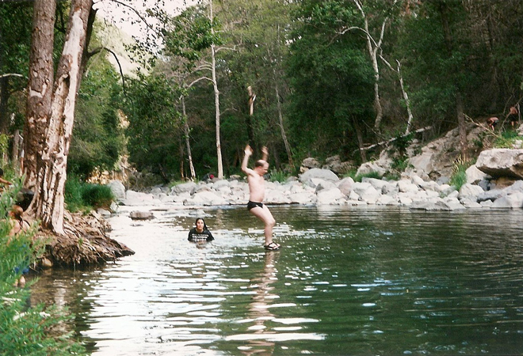
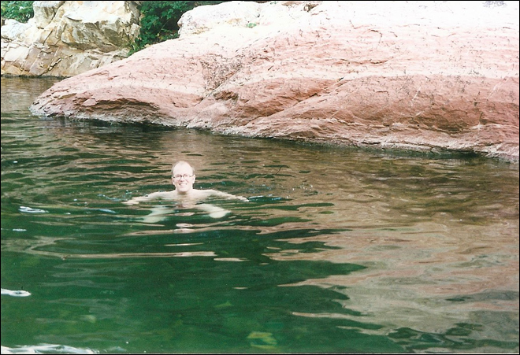
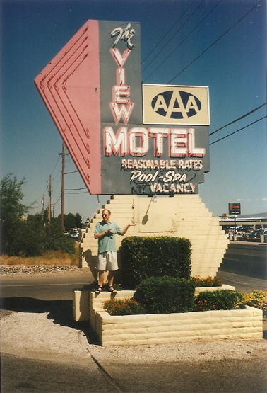
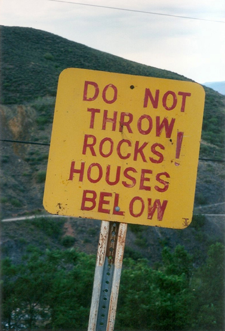
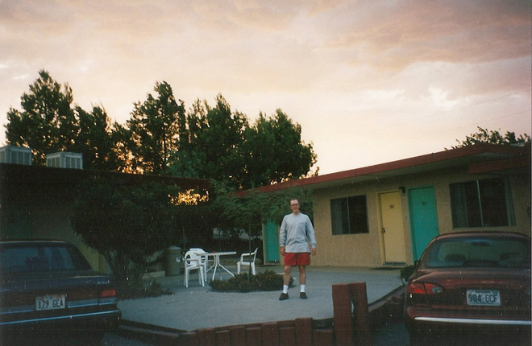
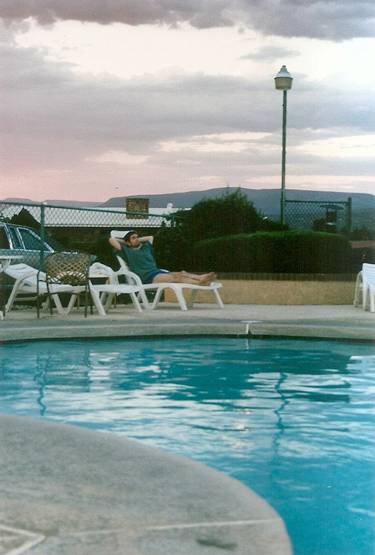
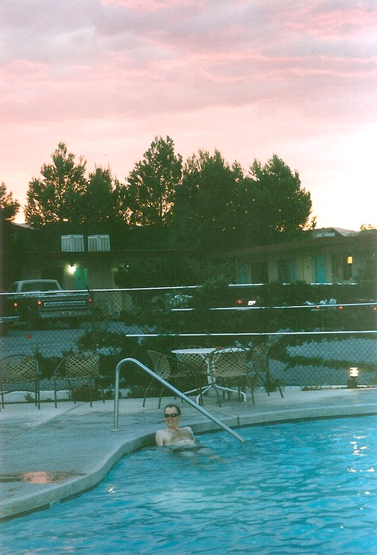
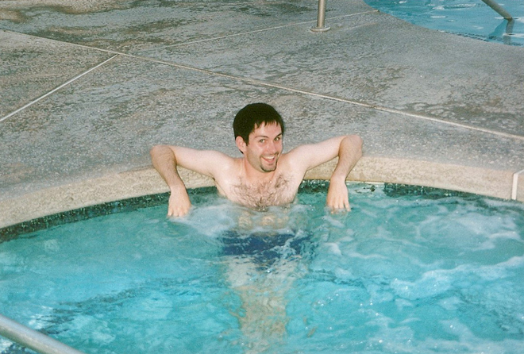